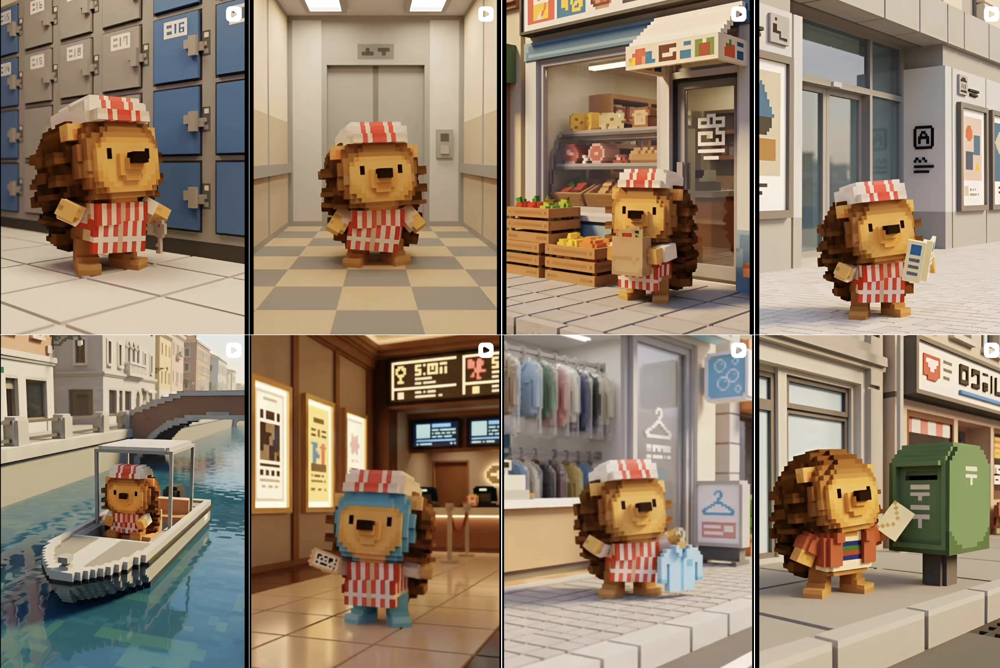
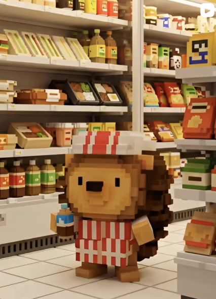
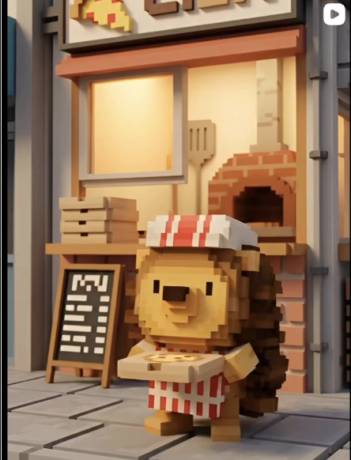

← News 一覧へ
何も喋らないのに、
何も喋らないのに、
なんだか癒される。

エレベーターで。スーパーの棚の前で。運河のほとりで。郵便ポストのそばで。
ハリチくんは、何も言わない。
案内もしない、宣伝もしない。
ただ、そこにいる。
気づいたら、なんかいる。
なんかいるけど、なんか癒される。 — @harichi_kurichiland の世界観
なんかいるけど、なんか癒される。 — @harichi_kurichiland の世界観
クリチLANDの公式マスコット「ハリチくん」のInstagramアカウント @harichi_kurichiland では、そんなハリチくんの"静かな日常"を配信中。
特に何も起きない。でも、なぜかスクロールが止まる。
そういうアカウントです。

ボクセルで描かれた近未来の街。そこに、ただハリチくんがいる。
言葉のないコンテンツは、スマホの喧騒のなかで、静かにじわじわくる。

SNSには言葉があふれている。
だからこそ、「ただそこにいる」ハリチくんが、すこし特別に見える。
ぜひフォローしてみてください。
ちなみに、ハリチくんは玩具にもなってます。
52ピースの紙パーツを指ではめ込むだけで組み立てられる、shi-gu-mi＋ コラボのフィギュア。手元に"本物のハリチくん"を置きたい方はこちらから。
→ 商品詳細・購入ページ
→ 商品詳細・購入ページ